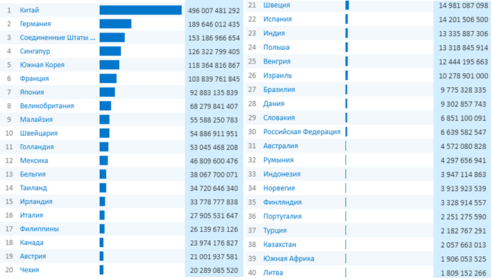
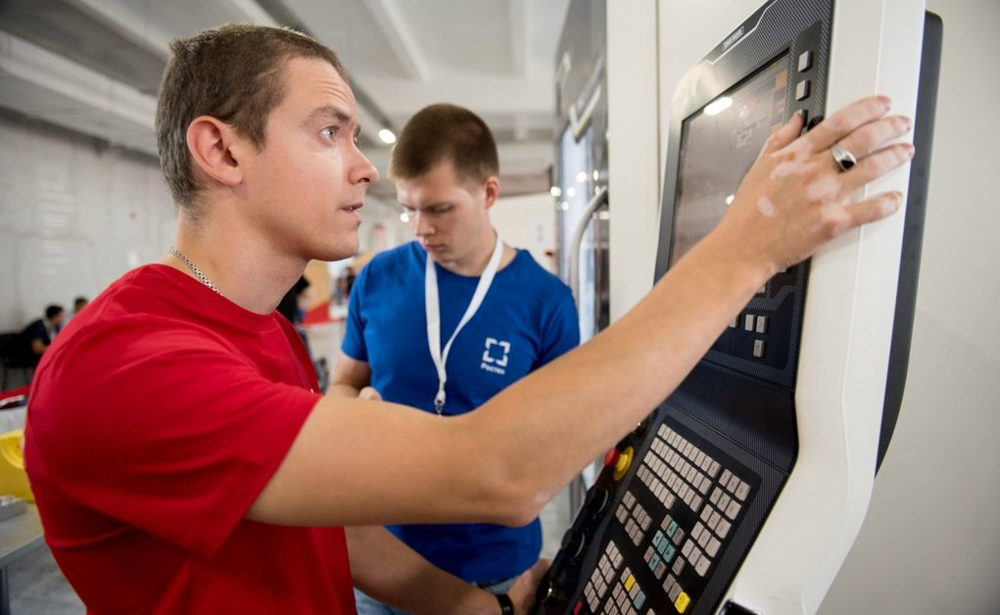

Содержание статьи
Позиции России на мировых рынках технологий
Россия обладает огромным потенциалом в сфере технологического развития. Этому способствуют не только имеющиеся ресурсы, но и поддержка правительства. Однако из-за политических кризисов прошлого стране приходится догонять сегодняшних лидеров, чтобы получить возможность обойти их в будущем. О сложившейся ситуации, ее причинах и перспективах развития мы расскажем в нашем материале.
Изначально географический детерминизм оказывал существенное влияние на развитие науки и технологий на территории России. Огромная площадь обусловила низкую плотность населения на большей части территории государства. Это приводило к замедлению коммуникации и другим трудностям, связанным с расстоянием. Например, перед Первой мировой войной в европейской части страны среднее расстояние между городами составляло более 80 км, а в Сибири почти 500 км. Данные особенности способствовали экстенсивному способу развития.
Неравномерное распределение населения и различия ведения хозяйства привели к формированию сильной централизации в стране, а суровые климатические условия обусловили менталитет. Однако сотрудничество с европейскими государствами позволило Российской империи стать ведущей страной. В начале XX века по уровню научного и технологического развития держава занимала лидирующие позиции. Однако становление коммунистического режима привело к первой крупной утечке специалистов из страны.
После Второй мировой войны напряжение между СССР и Западом постепенно росло, из-за чего были потеряны многие связи. Хотя страна быстро восстановилась и даже лидировала в некоторых направлениях, но уже к 90-м годам стало очевидно, что изоляция оказала негативное влияние на развитие технологий.
После распада СССР произошел второй крупный отток ученых и разработчиков из России, которые часто были вынуждены покинуть страну, чтобы прокормить семью. Социально-экономические особенности этого периода дополнительно замедлили темпы развития. После восстановления внутренних экономических связей и промышленности для обеспечения конкурентоспособности на мировых рынках одним из приоритетов стало восстановление лидерства в технологической сфере.
Существует ряд стратегических государственных программ, целью которых является совершенствование технологий. В 2007 году была создана госкорпорация «Ростех». Основными направлениями ее деятельности являются: авиация, радиоэлектроника и вооружение. Продукты этих направлений являются наиболее успешными в структуре высокотехнологичного экспорта страны.
Однако не менее активно развиваются и другие направления. За 2017 год в России создано 1402 передовые производственные технологии, а 490 из них составили научные исследования и разработки. Передовыми исследованиями занимаются около 4 тыс. организаций, а ежегодно из бюджета выделяется более 400 млрд рублей на развитие науки. Суммарно все организации страны тратят более 1,2 трлн рублей, а значит, 2/3 поступают из внебюджетных источников. Такие инвестиции приносят результаты, хотя мы пока еще не лидируем на рынке высоких технологий, но постепенно сокращаем отрыв.
Сейчас Россия имеет собственные высокотехнологичные разработки в таких отраслях:
- оружие и военная техника;
- космические технологии;
- высокотехнологичные материалы;
- транспорт, оборудование, оптика;
- сельское хозяйство;
- энергетика;
- медицина и биотехнологии;
- ИТ, робототехника, квантовые компьютеры.
Например, представлены разработки сверхпроводящего кубита, БПЛА, ионного двигателя, беспилотного автомобиля, биопринтер. Большая их часть приходится на госсектор.

Место России в экспорте высоких технологий. Данные Всемирного банка
По данным Всемирного банка, РФ занимает 30-е место по сумме экспорта высокотехнологичных товаров ($6,64 млрд), но эта доля очень мала, всего 0,3% от общемирового объема. Хотя в последнее время этот показатель существенно сократился из-за ввода санкций. Ранее крупнейшими потребителями были США и Германия, но сейчас эти рынки для многих продуктов закрыты. Однако основная доля по-прежнему поставляется странам СНГ.
Основной задачей развития технологий является не их продажа, а использование. Несмотря на незначительную долю на мировом рынке, Россия занимает лидирующие позиции во многих направлениях.
С 2014 года мы обогнали США по боевой авиационной технике и ПВО. Начиная с момента запуска первого искусственного спутника Россия лидирует в космических разработках и владеет ГЛОНАСС одной из двух глобальных навигационных систем. Все новые химические элементы за последние двадцать лет были синтезированы в РФ. Этот перечень можно продолжить достижениями в области физики, электроники и других направлениях.
Следует отметить, что в последнее время в большинстве случаев Россия не является первоначальным изобретателем, а развивает собственное ответвление, опираясь на уже существующую базу, или использует наработки времен СССР.
Правительство активно развивает это направление, считая его одним из перспективных. Разработана программа реализации цифровой экономики до 2024 года. К осени 2018 года планируется сформировать законодательную базу для регулирования криптоэкономики и технологии блокчейн, а к зиме перейти к правовым аспектам функционирования смарт-контрактов. В тот же период создадут программное обеспечение для управления «роем» беспилотников.
В 2019 году начнется внедрение связи 5G, а искусственный интеллект будет интегрирован в систему обработки данных медицинских учреждений. В 2020 году планируется создать отечественный квантовый компьютер, ввести биометрическую аутентификацию в различные сферы повседневной жизни и постепенное использование роботов в качестве штатных сотрудников. К 2021 году появится уникальный конструктор виртуальной реальности, с помощью которого можно будет создавать собственные продукты.
Помимо этого, будут развивать IT-инфраструктуру, кибербезопасность, интернет вещей и многое другое. Суммарно на реализацию программы будет выделено 100,46 млрд рублей из бюджета и 336,1 млрд из внебюджетных источников.
Несмотря на то что Россия пока не может претендовать на звание международного технологического лидера, но за последние 30 лет страна существенно усилила свои позиции и сократила отрыв от Запада. Однако, в то время как только треть российских исследователей работают над технологиями пятого поколения, в США до 10% уже перешли на шестое. При успешном выполнении стратегических планов в ближайшее десятилетие РФ может сравняться с ведущими странами по технологическому развитию, но для опережения потребуются собственные «громкие» прорывы.
Для этого нужно не только наличие кадров, ресурсов и средств, но и перестроение менталитета. Так как сейчас в большинстве случаев перспективную идею стремятся сделать своей или уничтожить, чтобы избавиться от конкурента. Существует множество исторических фактов, когда, не найдя поддержки, отечественные изобретатели прекращали вести разработки или реализовывали их в другой стране.
Инвестирования в современные технологии на мировом рынке
История человечества неразрывно связана с прогрессом. Инновационные идеи находили свое применение в повседневной жизни, были связаны с мирной жизнью или военными действиями. Открытия происходили внезапно (вспомним историю Ньютона и появление формулировки закона всемирного тяготения) или становились результатами длительных экспериментов и последовательных исследований.
Наука знает немало примеров, когда новаторские проекты годами не находили своего применения. Это происходило по разным причинам: идея слишком опережала свое время, в нее не верили или не видели практического применения. Часто причиной остановки проекта служило недостаточное финансирование, у большинства ученых просто не было собственных средств, а найти нужные суммы удавалось далеко не всегда. В современном мире отношение к инвестированию в новые технологии существенно поменялось. Даже появилось отдельное направление бизнеса - венчурное. У него есть свои преимущества и недостатки, о которых стоит узнать заранее.
Бизнес всегда был сопряжен с определенными рисками. Чем они выше, тем труднее найти людей, готовых вкладывать средства. Единственной компенсацией рискованного предприятия служит высокая доходность в случае успешной реализации проекта. Финансисты, работающие в этой нише, отлично понимают ситуацию: перспектива больших дивидендов сопряжена с большой вероятностью потери средств. Поэтому в качестве собственных гарантий они используют различные механизмы:
- Стараются инвестировать одновременно несколько проектов: новые технологии привлекательны, но не всегда находят выгодное практическое применение. Доходность одного проекта может компенсировать провал других.
- В обмен на вложенный капитал приобретается право на значительную долю акций, которые в дальнейшем реализуются заинтересованным лицам или через фондовые биржи.
- Молодым компаниям деньги могут перечисляться частями: если меняется ситуация на рынке (например, аналогичный товар вышел раньше), то появляется возможность свернуть финансирование.
- Часть денег направляется на маркетинговые исследования, анализ рынка, рекламу и т.д.

Несмотря на рискованность таких предприятий, инновационные идеи находят материальную поддержку. Основными источниками финансирования являются:
Государство. Заинтересованность в новых разработках объясняется их перспективностью и новыми возможностями (стать монополистом на международном рынке, усилить определенный сектор экономики, повысить уровень безопасности).
Венчурные бизнесмены. Новаторские разработки и научные открытия способны принести большие дивиденды, особенно если занимается новая ниша, где предприятие может стать монополистом.
Бизнес-ангелы. Их основное отличие от венчурного бизнесмена – личный подход к выбору проекта. Проще говоря, ангелы доверяют свои деньги на основе личных связей и уверенности в конкретном человеке (авторе идеи, владельце новой компании). Они готовы к большим рискам и на протяжении совместной работы активно участвуют в проекте. А бизнесмены вкладывают свои средства при условии, что потенциальный риск отвечает определенным финансовым показателям. При этом их участие обычно ограничивается предоставлением денег и общим контролем.
Получение прибыли – конечная задача любого бизнес-проекта. Поэтому, осваивая сектор экономики, связанный с перспективными научными разработками, следует узнать, как грамотно инвестировать в новые технологии. Есть ряд факторов, на которые стоит обратить внимание при выборе предприятия для капиталовложения.
Практически у любого открытия есть перспектива получения сверхдохода в случае успешной реализации. Но при этом остаются многочисленные риски, которые могут помешать продвижению идеи. К основным причинам итоговой неудачи можно отнести:
Объем капиталовложений. Новое предприятие потребует расходов, которые можно отнести к обязательным: затраты на исследования и научно-конструкторские работы, маркетинг, производство, вывод на рынок и сбыт готового продукта. При условии, что затраты планируются в течении нескольких лет, а прибыль не гарантирована, уровень рентабельности в итоге может оказаться незначительным.
Цена и спрос. Стоимость новой продукции должна быть оптимальной: слишком низкая может вызвать сомнения в качестве, слишком высокая отпугнет покупателей. Предсказать спрос труднее, новая вещь может моментально завоевать популярность, тогда возникнут проблемы с регулярными поставками. Ее переизбыток приведет к перенасыщенности рынка, следовательно, замедлит реализацию. Недостаточная коммерческая обоснованность цены или отсутствие спроса – существенный фактор риска.
Конкуренция. В научной среде не раз случалось так, что одна и та же идея озаряла людей, абсолютно не связанных между собой. Поскольку венчурный бизнес предполагает длительное капиталовложение (от 2 до 7 лет), нельзя исключить появление аналогичного продукта и появления конкурентов.
Моральное устаревание. Еще один риск, о котором стоит помнить при вложении крупных сумм в науку: всегда существует возможность разработки более технологичной и новаторской продукции в выбранной области. В результате выпущенный компанией новый продукт может оказаться «морально устаревшим» по сравнению с тем, которые одновременно или чуть позднее выпустят конкуренты.
Дополнительные расходы: получение патентов на изобретение, подтверждение авторских прав, исследования, связанные с безопасностью и другие накладные расходы могут существенно снизить итоговую рентабельность.
Несмотря на рискованность некоторых предприятий, существует ряд предпосылок для успеха, имеющих значение для потенциальных инвесторов:
- Уникальность разработки: чем оригинальнее идея, тем больше шансов на коммерческий успех.
- Перспективные отрасли: существует ряд направлений, которые стабильно пользуются спросом: нано- и экотехнологии, вооружение, энергетика, робототехника, информационные технологии и искусственный интеллект, космические исследования, медицина, безопасность, цифровая экономика и основные научные направления (физика, химия, биология). Большинство перечисленных направлений тесно переплетаются между собой, а на стыке наук чаще всего происходят самые перспективные открытия и разработки.
- Аналитика: качественные предварительные исследования и расчеты могут дать определенные гарантии на дальнейший успех.
- Безопасность: потенциальные финансисты предпочитают увеличить расходы на службу внутренней безопасности, чтобы минимизировать риск утечки информации.
Новые технологии остаются привлекательными для инвестирования. Бизнесмены заранее готовы к отсутствию прибыли вплоть до конечной реализации проекта и к возможному провалу. Зато в случае удачной реализации бизнес-проекта их ждут хорошие дивиденды. Прибыльность в данном секторе экономики самая высокая, по последним оценкам в европейских странах она составляет около 75%, на российском рынке этот показатель чуть ниже – в пределах 65%. На данный момент эти показатели рентабельности являются самыми высокими в экономике.